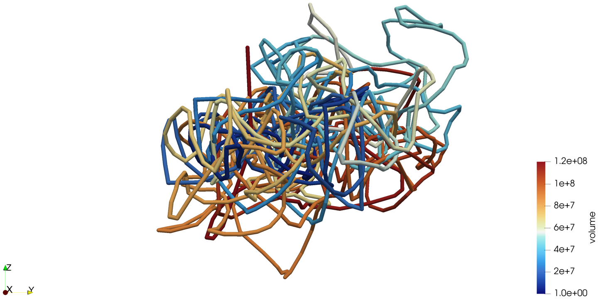
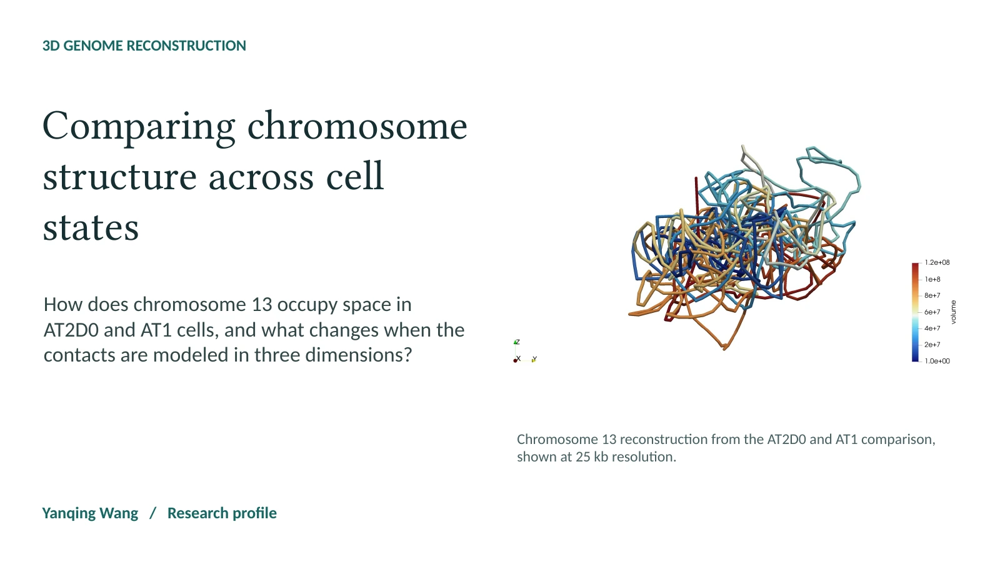

3D genome reconstruction
Comparing chromosome structure across cell states
How does chromosome 13 occupy space in AT2D0 and AT1 cells, and what changes when the contacts are modeled in three dimensions?
FLAMINGOr · OpenMiChroM
Approach
I reconstructed chromosome 13 at 25 kb resolution with FLAMINGOr, annotated the structures by chromatin subcompartment, and used OpenMiChroM to examine chromosome dynamics.
Preliminary structural comparison
The preliminary reconstructions suggested a smaller chromosome 13 territory in AT1 than in AT2D0. Radius of gyration and shape descriptors provided complementary measures of the two structures.
Proposed follow-up
Comparisons across independent samples and simulation runs would help distinguish reproducible cell-state differences from variation between reconstructions.


Project presentation

![Slide 2. I reconstructed chromosome 13 at 25 kb resolution with FLAMINGOr, annotated the structures by chromatin subcompartment, and used OpenMiChroM to examine chromosome dynamics. The preliminary reconstructions suggested a smaller chromosome 13 territory in AT1 than in AT2D0. Radius of gyration and shape descriptors provided complementary measures of the two structures. Comparisons across independent samples and simulation runs would help distinguish reproducible cell-state differences from variation between reconstructions.](../assets/slides/chromatin-structure-2.webp)
Read the PDF on this page
Method reference · FLAMINGO reconstruction paper